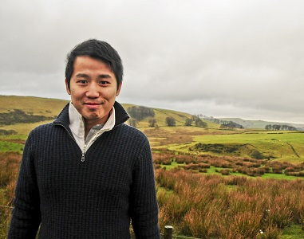

| Home | Publications | Mini-projects |
|
I am currently a post-doc with Dr. Patrick Shafto
in the Math & Comp Sci Department at Rutgers University–Newark.
Here I am exploring the strengths and weaknesses of active exploration and
different pedagogical methods with computational models and psychophysical experiments. Before this, I was a post-doc with Prof. Daniel Wolpert and Dr. Máté Lengyel in the CBL Lab at University of Cambridge. There I studied active sensing by tracking human eye movement and quantifying its sensing efficiency with Bayesian active learning. Before that, I did my PhD with Prof. John Bechhoefer in the Physics Department at Simon Fraser University. There I modelled the DNA replication as a stochastic process and applied the theory to analyze several types of replication experiment. Education: Ph.D. in Physics, Simon Fraser University (2012) B.Sc. in Physics, University of British Columbia (2006) Contact: scottchenghsinyang[AT]gmail[DOT]com |
 Background: Peak District, UK in December 2013
|